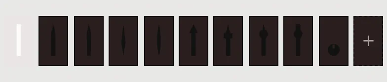

Dial Tool · Help
Every pane and control, one sentence each. For the illustrated walk-through and the maker sheet, see the guide. Written for beta 4.92.
The idea
- A dial is layers. Date disc, plate with its print, hands, cap: the print is rings drawn on the plate.
- The ring list is the stack. The top ring wins where rings meet; a ring can give way to the rings above it.
- Select, then edit. Choose a row in the ring list, or tap a mark on the preview: the panes below edit that ring.
- Everything is true size in mm. The page margin lies outside the dial. Your dial is saved in this browser only; keep it as a settings file or share it as a link.
The screen
 1234
5678
1234
5678
- 1Title line
- Version, Help, the Gallery and the unit box: mm, pt, in, lignes, thou.
- 2Tabs
- Dial · Rings · Hands · Windows · Export. Each opens its panes; pinned panes stay in view while the rest scrolls.
- 3Preview
- The dial at true proportions. Scroll zooms, right-drag moves, two fingers pinch and move.
- 4Top left
- Undo · redo, the list of steps, and Versions: your saved dials.
- 5Top right
- Guides, Case, X-ray: preview helpers, never in a file.
- 6Bottom left
- Backdrop, the colour behind the dial; Shadows.
- 7Bottom right
- The Tiny preview, the dial alone and show mode.
- 8Bottom bar
- Time and speed, the date, the timeline, zoom and Fit.
On a phone the panel is a drawer: drag its grip to make it taller or shorter.
A first dial
- Dial › Reset › Blank face.
- Dial: set the Diameter.
- Rings: add a ticks ring for the minute track, a markers ring for the hours, a numerals ring if you want figures.
- Hands: pick a shape for each hand.
- Windows: tick the window at 3 if you need a date.
- Export: a PDF or SVG at true size; for print, tick Mono print mask under Print.
Dial
The plate: its size, colour and what is on it.
Dial
- Diameter
- The plate's diameter, in mm.
- Scale everything with it
- When on, rings, hands and windows grow and shrink with the diameter.
- Weight %
- Every width on the dial at once: marks, bands, hands, frames. Lengths and places stay; one undo takes it back.
- Centre hole
- The hole for the hand pipes, Ø mm; 0 for none.
- Plate colour
- On the Dial heading line.
- Background
- Add image… is a place kept for a picture under the print; not built yet.
Page · Colours · Reset
- Page margin
- Room round the dial on the exported page; also the room for registration marks.
- Colours
- Every ring's colour in one list, a line per ring; a band with sectors has one per sector.
- Reset
- Reset to the First dial, or Blank face: a white plate with hands and nothing else. Undo brings yours back.
Rings
The print. Five kinds: ticks, markers, numerals, band, text. The list's top row is the top layer.
Rings, top first
- The list
- One row per ring: its eye, kind, colour, size and radius. Choose a row to edit it below.
- Tools
- On the heading line: Add a ring; Move up, Move down, Duplicate, Delete for the chosen one.
Panes for the chosen ring
- Text · Type
- What a text ring says; the font, its style and size for text and numerals.
- Resize Ring
- Which edge holds still when the ring grows: Outer, Middle or Inner; with the length, width or Ø.
- Shapes
- A mark's shape (bar, wedge, dot, your file), width, taper, hollow wall and rounded ends.
- Positions
- How many marks and where: Count, Every, Offset, Start, Span; Skip those to draw only the gaps.
- Give way to rings above
- Skip marks under a ring above, or knock out round it with a clearance.
- 12 o’clock · first position
- A different style, scale and gap for the first marker.
- Numerals
- First number, step, digits, start again after, and placement.
- Band · Sector colours
- A band's fill; a colour per sector when it has several.
- Edit one numeral
- Move, turn, scale or reshape one mark or numeral: Radius ±, Angle ±, Rotate, Scale.
Markers and numerals leave a window's position empty; other marks are cut back from the window's clear zone.
Hands
Hour · Minute · Seconds, as tabs; the panes below edit the chosen hand.
- Show
- Whether the hand is drawn.
- Shape
- Baton, pencil, sword, dauphine, leaf, arrow, syringe, breguet, lollipop, disc; the dashed tile, a shape of your own, is not built yet.

- Length · Width · Tail
- In mm, from the pivot.
- Shape rows
- Tip length, head width, widest at %, circle Ø, hub, counterweight, hollow wall: only those the shape uses.
- Cap
- The disc over the pivot: Cap Ø; Cap on this hand when there is no seconds hand.
Windows
Four windows, at 12 · 3 · 6 · 9, as cards. Tick a window's heading to show it.
- Complication
- Date, day, am · pm, moon phase; Big date for two discs.

- Shape
- The hole: radius, width, height or Ø, sides, corner; turned with its radius or not.
- Frame · Clearance
- A printed frame round the hole, and how far marks keep away from it.
- Follows the date
- Shows the date set in the bar, not typed text; a moon window shows its age.
- Neighbours
- The disc's next places show where the hole allows.
- Jumps
- am · pm only: snaps at midnight and noon; off, the disc sweeps once a day.
- Inside the case
- The disc may not pass the case; off for a face on a screen.
- Names · Written
- A day window's language (EN, TR, DE, FR, IT) and Short or Full names.
- Font
- The window's own font.
Export
- Export a file
- PDF, SVG and PNG at true size; dpi for PNG; a Wear OS watch face.
- Mono print mask, Inverted, Cut lines, Outline and registration marks, Hidden rings still cut, What the windows show, Mirrored for toner transfer; ink films, a print sheet, a spec sheet.
- A set of files
- Tick the files you want; Export ticked writes them all.
- Moving picture
- The dial running: seconds, fps, size.
- Share dial as link
- A link that opens this dial anywhere. It holds only what you changed, and may stop opening after the tool changes: to keep a dial, save a settings file.
- Settings file
- Save… · Load…: every value, to keep a dial for good.
- Log · Gallery
- What each export did; dials to open and take apart.
Mirror only for toner transfer. Never send a mirrored file to a pad or screen printer.
Corners and bar
- Guides
- Circles and lines for the chosen ring or window; the chevron picks which, and their colours.
- Case
- Dress, Field, Diver or Emre round the dial, as a flat silhouette, preview only; No case to start. Straps are in show mode.
- X-ray
- The windows' discs under the plate, preview only.
- Shadows
- Shadows from one sun; the chevron sets the light and how high each part stands.
- Backdrop
- The colour behind the dial.
- Time
- Play, the time, am · pm, the date, Now; the speed slider runs time from 0.1× to 720×.
- Zoom
- − · + · Fit; the lens explains scroll, right-drag and pinch.
Show mode
The iris turns the tool into a showcase: the whole watch, lit. Its tabs: Dial · Watch · Light · Export. Its Colours are your dial's; the round swatch on the title line puts the panel in greys.
- Dial
- The dial's colours and Ink height: how far printed ink stands proud of the plate.
- Watch
- View, case, metal, insert; strap and its pattern.
- Light
- Style and Lighting; Sun from and height (or drag on the canvas); shadows, flare, glass reflection, effects.
- Export
- The watch as PNG or PDF.
Keys and pointer
Keys work when you aren't typing in a field, and not with ⌘ Ctrl ⌥ held. Ctrl for ⌘ on Windows.
- ← →
- Time back or on a minute; with ⇧, an hour.
- Space
- Play or pause time.
- G H S X
- Guides, hands, shadows, X-ray: on or off.
- E
- The dial alone; closes Compare.
- ⌘Z · ⇧⌘Z
- Undo · redo (⌘Y redoes too).
- ↑ ↓ in a number
- One step; with ⇧, ten. Enter takes the value, Esc cancels it.
- Esc
- Closes an open menu or pop-up.
- Fine slider
- Hold a slider and move away from its track, up or down: the farther, the finer, down to a twentieth of its speed. A finger opens the controller instead.
- Typing a number
+0.5adds,x2multiplies,/2divides; a length takes a unit:12pt,0.5in,3cm,20lig,40thou. A comma works as a point.- Text ring angle
- Snaps to a position when it comes within 2°.
How do I…
- start fresh
- Dial › Reset › Blank face, or Reset to the First dial.
- find my dial again
- Versions, top left; or open your settings file or link.
- change every colour
- Dial › Colours.
- lose the 3 beside a date window
- It's already gone: markers and numerals leave a window's position empty.
- keep marks off a band
- On the marks' ring, Give way to rings above.
- move one numeral
- Rings › Edit one numeral.
- print a mask
- Export › Print › Mono print mask, then PDF or SVG.
- type a value
- See Keys and pointer.
Words
- Plate
- The dial disc under the print.
- Ring
- One layer of print: ticks, markers, numerals, band or text.
- Ticks ring
- The minute track (chapter ring).
- Marker
- An hour mark (index).
- Band
- A solid ring of colour; thin bands make railroad rails.
- Window
- A hole in the plate showing a disc: date, day, am · pm, moon phase, big date.
- Knock out
- A ring cut clear round marks above it.
- Mask
- Black on white, for etching or film.
Report a bug
Thank you for trying the tool. If something looks wrong or acts oddly, tell us here; a few plain words are plenty. Your name lets us thank you and ask a follow-up question. The tester code only keeps spam out; ask Okay for it. Your browser, screen size and whether you use touch or a mouse are sent with the report, as they often explain a bug. Nothing else is sent, and this page keeps nothing.